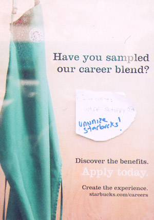
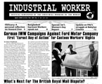

Submitted on Mon, 04/26/2010 - 11:12pm
 Greetings from the International Solidarity Commission (ISC) of the Industrial Workers of the World (IWW) and welcome to the second of our irregularly published international news letters.
Greetings from the International Solidarity Commission (ISC) of the Industrial Workers of the World (IWW) and welcome to the second of our irregularly published international news letters.
The purpose of this newsletter is to keep our allies around the world informed of our activities, solidarity campaigns, and relevant international labor struggles. It is our hope that this newsletter will contribute to building worker-to-worker solidarity through strengthened communications and exchanges of information.
If you would like to contribute story ideas or news for the bulletin, or wish to contact the ISC, you can email solidarity [at] iww.org.
Saludos de la Comisión de Solidaridad Internacional (ISC) de los Trabajadores Industriales del Mundo (IWW) y dar la bienvenida a la primera de la carta publicada irregularmente noticias internacionales.
Submitted on Wed, 04/21/2010 - 2:21pm
National Sweatshop Workers Tour Kicks Off at Macalester College, IWW Headquarters
April 21, 2010
Kalpona Akter, of the Bangladesh Center for Worker Solidarity (BCWS), paying her respects at the site of the 1911 Triangle Shirtwaist Factory Fire, in which 146 workers, overwhelmingly women, died because their factory was locked from the outside. In February 2010, 21 workers died in a similar fire in a Bangladeshi Factory Fire.
Submitted on Wed, 03/31/2010 - 12:21pm
On March 19, a delegation of IWW Starbucks baristas from the Twin Cities crammed themselves into one worker's 3-cylinder Geo Metro and set off on a journey to bring the good word of solidarity unionism to baristas and workers across the lower midwest. Four days later, we returned to the Twin Cities after covering over 1,700 miles, talking to dozens of Starbucks workers about the union, and speaking to enthusiastic audiences in Kansas City, St. Louis, and Iowa City about our efforts to win decent wages, consistent scheduling, and other basic demands through workplace organizing at the world's largest coffee chain.
Our first stop was KKFI, a community radio station in Kansas City, where the Heartland Labor Forum radio show was kind enough to interview us about our organizing experiences on their show. We then made our way to the Westport Coffee House, where we held a discussion with interested community members about the issues at Starbucks, and the possibility of building a new labor movement from the ground up. We discovered that, just as in every other American city, the Kansas City working class is under attack. The Kansas City School Board recently decided to close an enormous number of schools and lay off many teachers, unionized in the American Federation of Teachers. We extend our solidarity to them and hope that workers and students can unite in defense of quality public education.
The next day, we hit the road for St. Louis, site of the first general strike in US history in 1877, as well as a giant arch, and the worker-owned and democratically-operated Black Bear Bakery. The Autonomy Alliance and local IWW members sponsored a public event at the bakery, providing us with an opportunity to share the story of our union campaign with local labor activists and workers.
Submitted on Wed, 03/31/2010 - 10:17am

Headlines:
- German IWW Campaigns Against Ford, Eurest
- What's Next for the British Royal Mail Dispute?
- Judge Upholds Boycott Ban On FAU Berlin
Features:
- Obituary: A personal reflection on Howard Zinn
- Special: International Women's Day Report
- Football Through Labor's Lens, Part 2
Download a free PDF copy of this issue.
Submitted on Wed, 03/24/2010 - 12:54pm
The International Solidarity Commission (ISC) of the Industrial Workers of the World (IWW) supports the workers in struggle in Greece and their strike actions in opposition to the threat of "austerity measures" by the Greek government, who claim those measures are needed to stop the country from bankruptcy. We are encouraged to see workers across Greece take a stand against the government's gamble with their livelihoods and exploitation of their labour. They have taken to the streets, and stopped working in a visible and powerful refusal to pay for the mess of the banks and financial speculators.
Rather then acquiesce to the official lie of a nation united in necessary sacrifice for the common good, they have exposed that the working class are not the cause of the crisis. We will not suffer for it. As the slogan goes, in Greece and elsewhere, we won't pay for their crisis! As one of the first countries threatening such wide-sweeping cuts, and in turn verging on bankruptcy in this crisis, the protests of workers in Greece are for us all.
As governments across the world respond to the current recession, a fruit of the unfettered gambling by capitalists with the wealth of the earth and the labour of workers everywhere, by further cutting into the subsistence and rights of the working class, we are glad to express our solidarity with the workers of Greece.
We are grateful to them for refusing to comply with the lie of "austerity" measures, which amount to the demand of a sacrifice by the poor for the benefit of the rich and for continuing to take a brave stand in the face of police repression.
In the hope that their struggle, which is also a struggle for workers everywhere, may continue and succeed, the IWW aim to lend our support, by action in solidarity, where it is within our grasp to do so, in our firm knowledge that 'an injury to one is an injury to all'.
In Solidarity,
The ISC of the IWW